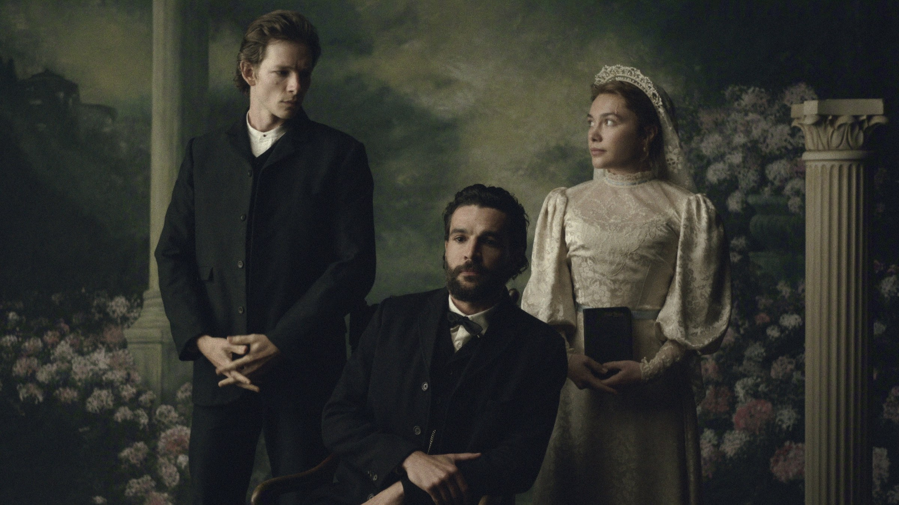
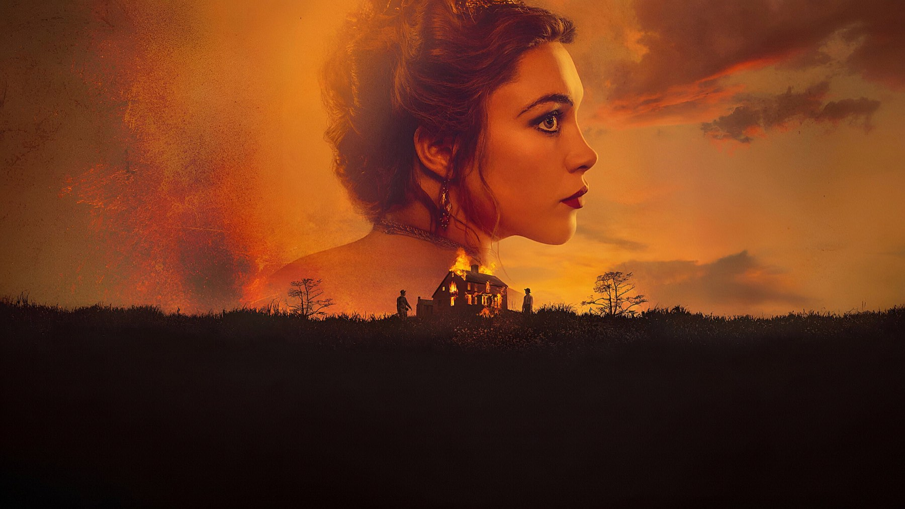
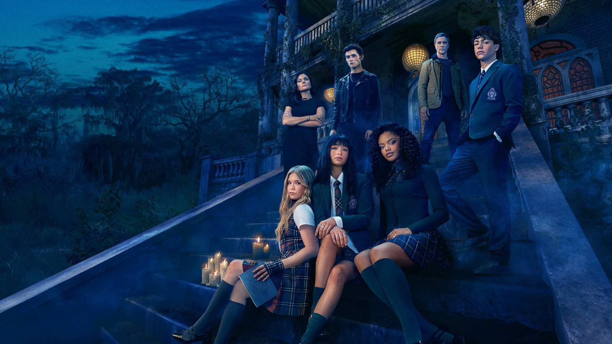

Novità in streaming nel weekend: 2-4 ottobre 2026
Da La valle dell'Eden su Netflix ad American Horror Story 13 su Disney+, cinque serie da mettere in lista per i prossimi tre giorni
Primo weekend di ottobre e divano pronto: le piattaforme hanno messo in fila una settimana di uscite davvero varia, tra un classico della letteratura americana, una comedy corale tutta italiana, un thriller spagnolo che torna e due serie in piena atmosfera da autunno. Abbiamo scelto cinque titoli, con data, piattaforma, cast e il nostro giudizio d'attesa, cioè quanto ci incuriosiscono prima di aver visto tutte le puntate.
Una precisazione: le date sono quelle italiane, controllate sui calendari di testate italiane. Alcuni database internazionali indicano il giorno di uscita americano, che a volte è diverso di ventiquattro ore.
La valle dell'Eden (Netflix, dal 1 ottobre)

È il titolo più importante del fine settimana. La miniserie, in sette episodi, riporta sullo schermo il romanzo di John Steinbeck del 1952 ed è creata da Zoe Kazan, che firma il progetto insieme a Jeb Stuart come co-showrunner. Il legame con la storia del cinema è diretto: Kazan è la nipote di Elia Kazan, il regista che nel 1955 portò sullo schermo una parte del libro con James Dean. Qui l'idea dichiarata è raccontare l'intera saga della famiglia Trask lungo più generazioni, e non solo la sua metà più nota.
Il cast è il suo primo argomento: Florence Pugh è Cathy Ames, la figura che divide due fratelli, con Christopher Abbott (Adam Trask), Mike Faist (Charles Trask), Hoon Lee (Lee) e Ciarán Hinds (Samuel Hamilton). La serie è stata girata in Nuova Zelanda. Il nostro giudizio d'attesa è alto: un romanzo enorme, un'autrice che ci tiene davvero e un'attrice ideale per un personaggio così ambiguo. Il rischio, come sempre con i grandi libri, è la fedeltà a un testo che la memoria collettiva conosce già a modo suo.
Ingorgo (Prime Video, dal 2 ottobre)
Una coda sull'autostrada al tramonto, migliaia di automobilisti bloccati e un'ora dopo l'altra, storie che si incrociano. Ingorgo è la comedy italiana di Prime Video, in sei episodi, tutti disponibili dal 2 ottobre. Dietro la macchina da presa c'è il duo YouNuts!, formato da Niccolò Celaia e Antonio Usbergo; i testi sono di Daniela Delle Foglie e il punto di partenza è il format spagnolo Atasco. La produzione è di Garbo Produzioni con Prime Video.
Il cast è corale e numeroso: tra i nomi ci sono Alessandra Mastronardi, Stefano Fresi, Matilde Gioli, Francesco Pannofino e Ilenia Pastorelli, accanto a oltre quaranta altri interpreti tra cinema, televisione e teatro. Il giudizio d'attesa è curioso ma prudente: lo spazio chiuso di un ingorgo è un'idea semplice e molto teatrale, che regge solo se i personaggi sono scritti con cura. Con sei episodi, però, la maratona di una serata è alla portata.
Regina Rossa, stagione 2 (Prime Video, dal 2 ottobre)
Torna il thriller spagnolo con Victoria Luengo nel ruolo di Antonia Scott, la donna descritta come la più intelligente del mondo che guida un progetto speciale della polizia, e con Hovik Keuchkerian in quello dell'ispettore Jon Gutiérrez. La seconda stagione, di sei episodi, riparte da un caso complicato che le testate italiane collegano a una trama di criminalità organizzata.
Il giudizio d'attesa è positivo per chi ha già visto la prima stagione, perché la coppia di protagonisti è il vero motore della serie. Chi arriva da zero farà bene a recuperare prima gli episodi precedenti: è un titolo che chiede di conoscere i personaggi.
Coven Academy: L'accademia delle streghe (Disney+, dal 2 ottobre)

Per Halloween in anticipo, la serie fantasy creata da Tim Federle ha dieci episodi e racconta di un'accademia in cui il potere magico è la vera moneta di scambio e innamorarsi della persona sbagliata può costare caro. Al centro ci sono tre giovani streghe e un gruppo di stregoni coetanei, con Malina Weissman nel ruolo di Briar Roberts e Tiffani Thiessen in quello della signorina Graves. Per la trama, le testate italiane la collocano a New Orleans.
L'attesa è quella tipica del teen fantasy: leggero, un po' misterioso, ideale per chi cerca una serie da seguire senza troppe pretese. Il nostro consiglio è provarla con la prima puntata e decidere in fretta.
American Horror Story 13 (Disney+, dal 1 ottobre)
La tredicesima stagione dell'antologia horror ha un calendario particolare: tre episodi disponibili al debutto il 1 ottobre, altri tre l'8 ottobre e poi due a settimana, sempre di giovedì, con la chiusura il 5 novembre, per un totale di tredici puntate. Tornano molti volti storici del franchise: Emma Roberts, Kathy Bates, Jessica Lange, Sarah Paulson, Angela Bassett ed Evan Peters.
Il giudizio d'attesa è da fan: le reunion del cast sono il motivo principale per cui la stagione è uno degli eventi del mese. Con tre episodi già online, il weekend è il momento giusto per capire se il tono fa per voi. Il consiglio pratico: non aspettate il finale per cominciare, perché l'uscita a blocchi iniziali rende facile recuperare.
E gli anime?
Su Netflix, per chi segue gli anime, le uscite del fine settimana sono settimanali: Tougen Anki, stagione 2, il venerdì, Ranma1/2, stagione 3, il sabato 3 ottobre, e Blue Box, stagione 2, la domenica 4 ottobre. Sempre su Netflix c'è anche #Love, un drama romantico indiano uscito il 2 ottobre. Su Disney+ il 4 ottobre arrivano inoltre le stagioni 1 e 2 di Spy × Family.
Cosa vedere per primo?
Un grande romanzo, una comedy corale, un ritorno e due serie d'atmosfera: il weekend è servito.
Se avete solo una serata, la scelta migliore è La valle dell'Eden, il titolo con più ambizione e più cast. Se cercate leggerezza, Ingorgo si finisce in un pomeriggio. Per un thriller già rodato, Regina Rossa. E chi preferisce le atmosfere da brivido troverà in American Horror Story 13 e Coven Academy due modi diversi di inaugurare ottobre.
Cinque novità per tre giorni di divano: La valle dell'Eden è la nostra scelta numero uno, Ingorgo la più facile da recuperare in una sera. E voi, da quale cominciate?
Domande frequenti
Quando esce La valle dell'Eden su Netflix?
La miniserie di sette episodi è disponibile su Netflix dal 1 ottobre 2026.
Quando finisce American Horror Story 13 su Disney+?
Il finale, il tredicesimo episodio, è previsto il 5 novembre 2026: tre episodi al debutto, tre l'8 ottobre e poi due ogni giovedì.
Dove vedere Ingorgo in streaming?
Su Prime Video, con tutti e sei gli episodi disponibili dal 2 ottobre 2026.
Fonti consultate (8)
- TMDB – La valle dell'Eden
- TMDB – Regina Rossa
- TMDB – Coven Academy
- ComingSoon – Cosa vedere in streaming a ottobre 2026
- Sky TG24 – 20 serie tv da vedere a ottobre
- Sky TG24 – La valle dell'Eden, data di uscita e prime immagini
- Sugarpulp – Ingorgo, la comedy Prime Video dal 2 ottobre
- CronacaPop – American Horror Story 13, tre episodi al debutto su Disney+